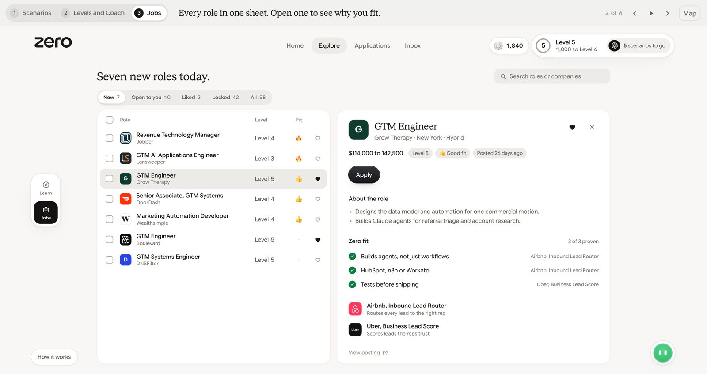
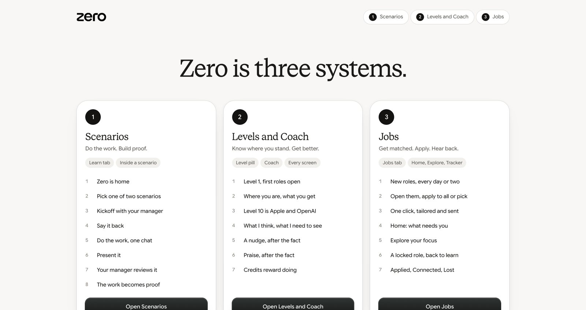
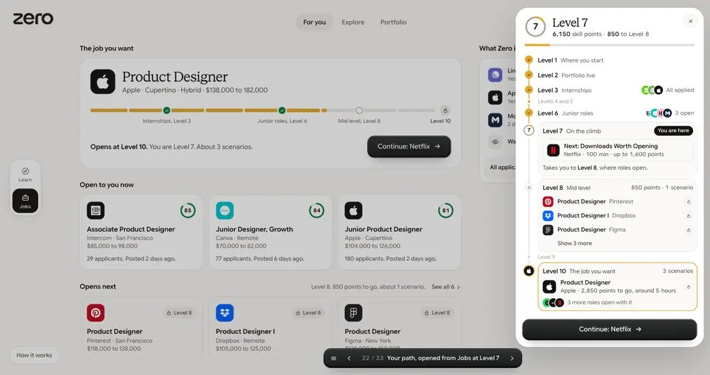
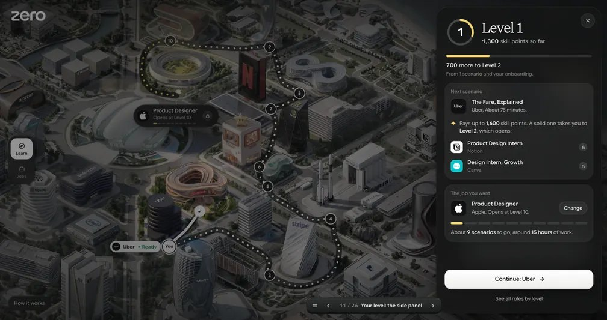
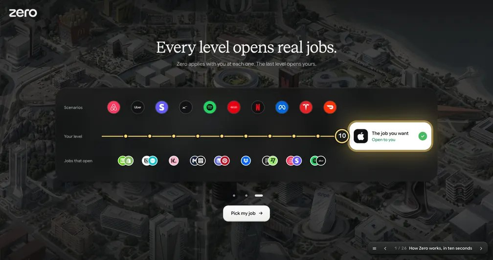

Zero skill path
Skill points, levels and the jobs they open. Every version, newest first, with what changed and what you said about the one before.

b6Earlier14 Oct
Calmer, and the learner is a GTM Engineer
Maya Reyes, GTM Engineer in Austin, aiming at OpenAI. 57 real GTM roles open today, a level slider, a daily check in, and Jobs rebuilt as Home, Explore, Applications and Inbox. Nothing scrolls.
“The one we made was good, but it is too complicated and has too much bad UI. More premium and aesthetic, with less text.”
Sanjay, on b5

b5Earlier14 Oct
The three systems from the Navid call
Scenarios, Levels and Coach, Jobs as three linked sites and a map. Level 0 start, every level opens a bucket of roles, Jobs V1 is Applied, Connected, Lost.
“Think in a system manner, not just UI. Give me 3 different sites, how they interact with each other, where they do it.”
Sanjay, after the Navid call

b4Earlier12 Oct
Compact path, and a job portal to the offer
Level 1 start, roles open at gate levels, one compact quick view of the whole path, and the job portal from a locked role to the interview, offer letter and hired.
“Make it compact please. In one go we should see more stuff.”
Sanjay, on b3

b3Earlier12 Oct
Back to b1, with a side panel
The b1 flow again. The full path page is gone: the level pill opens a side panel with your points, the next scenario, what it opens, and the job you want.
“I really like the previous B1 version. I don't want this screen. This is too much. Let's have a side panel.”
Sanjay, on b2

b2Rejected12 Oct
A ten second intro and a guided tour
How Zero works in one picture, then a guided first look on the real home screen. The pill read Level 1 of 10.
“This is good, but make a second version better, more quickly understandable. Start with intros.”
Sanjay, on b1
b1Earlier12 Oct
The first build: skill points open the job
The job you want is locked at a level. Scenarios pay skill points, 1,000 make a level, every level opens real roles. 25 screens and a plan page.
“You want to get the role, but the role is locked. Level up, gain more skill points by doing more scenarios.”
Sanjay, the first brief